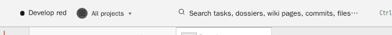
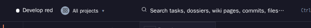

A red test is a fact about that test and the code it covers, not about the whole integration branch. A small base suite still stops the line. Every other confirmed red test goes into a bounded quarantine, only the cards whose paths reach that test's area wait, and a line guardian in the persona team classifies the red, picks quarantine, revert or fix forward, and lifts the quarantine on evidence. The project-wide fallback after two hours of red goes away.
Pattern conceptStatus decision-pendingPhase decision-readySource card AGT-3988As of 23 November 2026, develop 801cf4ca9Builds onDispatcher personas, Persona team, Delivery chain D4
01 Scope
On 23 November 2026 the owner asked: "A failing test must be able to be isolated. It must not paralyse the whole system. How can that work efficiently?" The question follows two days in which the integrate-first strategy (AGT-3965, AGT-3967, AGT-3976, live since Deploy 57) reported Agent Studio red several times for reasons that were not regressions, and each red stopped the whole project.
Post-merge commands inherited the daemon's environment, and all 22 RunnerOptionsTests failed (repaired by AGT-3981).
A cgroup test hung for ten minutes, but only inside the daemon's delegated cgroup (AGT-3983, in delivery at the time of writing).
Before that, single flaky tests turned develop red (AGT-3975, AGT-3980).
After two hours of red the project fell back to pre-merge. In that fallback every review ran the full suite with baseline and clean repeat. The owner reports that nothing was integrated between 23:00Z and 04:00Z.
The two-hour rule moved the repair card itself from Auto Review to Escalated, which superseded its running review. It also reopened a completed card (AGT-3966) that was only a suspect.
The operator set Agent Studio to strict by hand at 07:23Z on 23 November to stop the switching back and forth.
This is a concept. It changes no product code. It defines what stops the line, the per-test quarantine, the scope of a hold, what replaces the two-hour fallback, a triage role, environment parity and the cost of each step. It ends with decisions and nine slices that can be promoted to cards.
Open decisions RT-D1 to RT-D13; Slices RT-1 to RT-9 with dependsOn in workbench.json
02 In one paragraph
Only build, prepare and the base suite stop the line: they answer whether the product still builds, starts and serves its main paths, and when one of them is confirmed red nothing but the repair integrates. Every other test that fails twice at the same SHA, in the same test environment, and is not explained by a flaky repeat, becomes a held quarantine. The test keeps running and is reported, but it no longer makes develop red. Instead, the cards whose changed paths reach the folders that test covers wait at integration, and so do the paths of the merge it is attributed to. Everything else keeps flowing. Develop shows "green, 1 quarantined". A repair card goes to the front of the project's Ready lane with a model chosen for its class. A held quarantine lasts 24 hours and may be renewed once while a repair is in progress. At most three are held per project. It is lifted when the test passes twice in a row on tips that contain the repair. Flaky and environment failures get a report-only quarantine that holds nothing and expires after seven days. The automatic switch of the whole project to pre-merge after two hours is removed. In its place there is a ladder of narrower steps, and the owner is asked at named points with a recommended answer. A new persona role, the line guardian, carries these decisions as pure rules in the decision library, with one bounded model call for ambiguous classifications, its own log and budget, and criteria the owner reviews it by. Attribution gets a control run at the last green SHA and a double run at each bisect point, because a single run at each point is how a flaky failure ends up blamed on the newest merge. One declared test envelope makes review, gate and post-merge runs see the same world, and every receipt records its fingerprint.
03 What exists
Most parts exist. They are not connected, and two of them act on the whole project where they should act on one test.
Building block
State at 801cf4ca9
What this Dossier takes from it
Test quarantine file (AGT-W57 D4 A, AGT-2918)
.agent-studio/test-quarantine.json, entries test, card, expiresOn, optional resolvedOn and reason; no author field (TestQuarantinePolicy.cs:17-22). No code writes it, so a person or a card commits it. Agent Studio's list is empty. There is no limit on the number of entries or on how long one lasts. TestQuarantineReport exists, but no production code calls it. No UI shows it.
The entry shape, expiry semantics (active through expiresOn, armed again the day after) and "resolved, never deleted".
Who reads the file
The build-test gate (BuildTestGateRunner.cs:1448, integration, batch and per-task fallback gates): quarantined tests still run, failures are logged with testQuarantined= and a step whose failures are all quarantined passes. Post-merge reads it through a separate, looser parser (PostMergeAttributor.BlockingTests, runner/PostMergeAttributor.cs:47-80). The Remote Review suite does not read it. It uses the xUnit trait Category=ReviewFlaky instead (runner/ReviewFlakyTestIndex.cs).
Three readers, two parsers and one trait make up three separate notions of quarantine. RT-4 makes one store the source for all of them.
Batch gate "flaky quarantine"
A different mechanism with the same name. A failure cleared by the AGT-2853 re-run pauses the batch ("flaky quarantine requires a fresh gate verdict") and hands members to per-task gates (BatchGatePilotService.cs:2063-2081). It does not read the file.
Renamed in RT-5 to "re-run cleared", so that "quarantine" means one thing.
Post-merge repeat (AGT-3976)
Every failed suite gets one same-tip repeat. Each failed .NET method repeats once with a focused filter. A test that recovers is flaky and does not make develop red. A test that fails twice stays red. Receipts carry flakyTests, flakyCount and the start load sample. /api/develop-states exposes mostFlakyTests14Days.
The "failed twice at the same SHA" signal that starts a held quarantine.
Attribution and bisect
AttributeFailureAsync (runner/PostMergeRunCommand.cs:316-423). The suspects are the first-parent commits since the last green SHA, filtered by the test project's reference graph (PostMergeProjectMap.CouldAffect, with docs excluded). A binary search runs prepare, all three build commands and the focused test once at each point. Revert counts as independent only when no first-parent commit follows the suspect.
The filter is kept. Three gaps are fixed in RT-3: there is no control run at the last green SHA, a single run decides each point, and every point rebuilds the whole solution and the frontend.
Red develop repair (AGT-3312)
RedDevelopRepairPolicy: escalate when red for two hours or more (checked first), revert for one clean independent suspect, otherwise fix forward. The repair card is a Bug at Order = 0 in Preparation with no model set. AGT-3983, still in delivery, adds the repair card's lane as a fact so that a repair in Auto Review is held, not escalated. It also removes the automatic reopening of suspects.
The revert and fix-forward choice. The time rule is replaced by the ladder in RT-1.
Project-wide fallback
PostMergeModeService.EscalationActive resolves the project to pre-merge when the attribution repair card is Escalated, or when develop has been red or running for two hours since the first red run. That turns the batch gate on again and makes integration use the full pre-merge gate. The two-hour constant exists twice (RedDevelopRepairPolicy.cs:17, PostMergeModeService.cs:47).
Removed as an automatic step (RT-1).
Hold at integration
While the latest T3 verdict is red, RemoteIntegrationDaemon refuses a delivery whose changed paths overlap an open incident's FailingPaths with BlockedFailingArea. The repair card is exempt (runner/RemoteIntegrationDaemon.cs:199-213). FailingPaths are the attributed merge's paths, or every candidate's paths when nothing is attributed.
This is already a scoped hold. RT-5 widens its input from suspect paths to the failing test's covering folders, and keeps it while develop is otherwise green.
Folder to test-project map
Configured testExecution.folderToTestProjects (TestFolderMapping), the generated map from ProjectReference closures (GeneratedTestProjectMap, AGT-3310) and post-merge's own prefix table PostMergeRunPlan.Areas. Their unit is a test project. backend.Tests is one project with 1,312 files and about 12,000 test methods.
The fallback scope when a failing test cannot be mapped more finely.
Conflict record (AGT-3969)
One record per project, card, delivery SHA and integration tip, with conflicted files, the cards whose commits touched each file in the base-to-tip range and the resolution route. Read API with topFiles and cardPairs.
Revert independence (does a later merge touch the suspect's files) and the hold list of in-flight cards coupled to a suspect.
Develop state display
DevelopStateIndicatorComponent in the studio shell header polls /api/develop-states every 30 s and shows "Develop green", "Develop running" or "Develop red". Its row type has no flaky or quarantine field. Red and running render in the neutral text colour, because the two tokens it uses are not defined.
The surface RT-7 extends with the shared <app-status-indicator> (see Evidence).
Dispatcher and persona team
Dispatcher personas (AGT-3974) propose dispatch.hold with a reason code, at most 24 hours. The persona team has T1 and T2 tiers, PersonaLogEntryV1 and the budget ledger. The reliability engineer persona observes red batches and must never retry or requeue anything.
The role frame, the hold operation and the log format for the line guardian.
04 Four reds of 22 and 23 November
Four repair cards were opened in about 24 hours. Their own result reports name the causes. None of the four was a product regression caused by the merge it was attributed to.
Card
What failed
Real cause, from the repair report
Class
Under the proposal
AGT-3975
Runner Docker fixtures and four backend tests
The suspect merge changed documentation only. The fixtures and host factories had test races.
Flaky, wrong attribution
Attribution now excludes docs and repeats each failure (AGT-3976, integrated after this red). A recovering test is flaky and blames no merge. A race that fails twice would also fail the control run at the last green SHA, so no merge is blamed. Report-only quarantine, fix at medium.
AGT-3980
EngineReportReviewTests, one theory
A race between the lane move and the timeline event. Failed in 4 of 90 cases alone and 11 of 90 under load. The fix was a bounded poll in the test.
Flaky (load dependent)
At a failure rate of 4 to 12 %, the same-SHA repeat recovers it in about nine of ten runs, so it counts as flaky. If it fails twice, mixed results at a double-run bisect point stop the search. Report-only quarantine after three flaky runs. No line stop, no hold.
AGT-3981
All 22 RunnerOptionsTests
Post-merge commands inherited the daemon's RUNNER_* and AGENT_HOST_* variables, and the options parser read them.
Environment
The envelope canary in the base suite fails first, so the run is inconclusive, not red. The tests stay green in the review and gate envelopes.
AGT-3983
A cgroup test that hung for ten minutes
A detached sleep kept stdout open, and real cgroup tests accepted the daemon's service subtree as their own. The repair also covers the two card effects of the two-hour rule.
Environment and fixture
The envelope fingerprint differs from the gate's (daemon leaf, not worker leaf), so the run is classified as environment. The test is held only while it is classified, then report-only.
The code shows why the newest merge kept being blamed. The bisect runs the focused test once at each point. It treats a pass as "this point is good" and moves towards newer merges. A test that fails one time in eight under load passes at the older points, and the search ends at the newest candidate, where the failure was first recorded. A test that fails at every point because of its environment ends at the oldest candidate. Neither run checks the last green SHA. The independence rule then allows a revert only when the blamed merge is the newest. So the only automatic action that reopens a card was available exactly in the case that a flaky failure produces most often.
05 Principle
A red test is a fact about that test and the code it covers. It stops the cards that can change that code. It stops the whole line only if it says that the product no longer builds, starts or serves its main paths.
Signal
Effect
Why
Prepare or build failure, confirmed by one repeat at the same SHA
Line stop. Only the repair or revert integrates. Release blocked.
Nothing after it can be tested.
A base-suite test (category: base) failing twice at the same SHA
Line stop. Never quarantined automatically.
The base suite is the definition of "develop is usable": the product starts, and the architecture, guard, transition-boundary, task-list and release paths hold (Agent Studio: 3 suites, 376 s measured, cap 600 s).
A routine test failing twice at the same SHA, not explained by the repeat
Held quarantine. Develop stays green with a count. Cards whose paths reach the test's area wait at integration. A repair card is created. Releases are blocked while a held quarantine is active.
The failure is real at this SHA, but it says something about one area.
A test that fails and then recovers at the same SHA
Flaky. Counted, as today. From three distinct runs in 14 days the guardian opens a report-only quarantine with a card.
The repeat already answered the question for this run.
Envelope canary failure, fingerprint mismatch, or the failure reproduces at the last green SHA
Inconclusive. Neither red nor green. The run is repeated in the reference envelope, and an environment card is opened if it recurs.
The world was wrong, not the code.
Machine-bound suites (frontend-e2e, budgets)
Unchanged. Not part of window runs.
Out of scope.
The base suite has to earn its power to stop the line, so it needs a stability rule. A base test with any flaky occurrence in 14 days moves to its routine suite by a card, and the base suite keeps the 600-second cap it has today. Flakiness in the line-stopping set is the one place where a single bad test still paralyses everything.
Proposed flow. Blue boxes are new. The repeat exists today; the envelope check, the split between base and routine tests and the held quarantine are proposed.
06 Quarantine
Two kinds
Held
Report-only
Starts
Automatically, when a routine test fails twice at the same SHA in the standard envelope and the repeat did not recover it. Starting needs no model.
Set by the guardian when a test is classified flaky (three distinct flaky runs in 14 days, or mixed bisect results) or environment-caused. The owner may also set it.
Means
The test still runs everywhere and its result is reported. Its failure does not make develop red and does not fail a gate. Cards whose paths reach its area wait at integration (see Scope of the hold). Releases are blocked.
Runs and is reported. Holds nothing and blocks nothing, including releases. This is today's AGT-W57 meaning.
Lasts
24 hours. The guardian may renew it once for 24 hours while the repair card is in progress, that is in Progress, Auto Review or waiting for integration. After that the owner decides.
7 days. Only the owner renews it. On expiry the test is armed again, as today.
Card
Always the repair card.
Always a card that owns the fix.
Lifted
By the guardian when the test passed in two consecutive covering runs in the standard envelope, on tips that contain the repair card's integration. A window, nightly or focused verification run counts. The owner may lift it at any time.
By the guardian when the owning card is integrated and the test passed in two covering runs. Otherwise on expiry.
Never
A base test, a build or a prepare failure. A test that is already in quarantine and fails for a new reason (a new fingerprint) opens a new incident and does not extend the old one.
How many at once
At most 3 held and 8 quarantined in total per project. The cap keeps quarantine from becoming a second, quieter red. When a fourth test would be held, the line stops and the owner is asked, because four unrelated reds in one project are no longer isolated facts. Relapse counts as well: a test confirmed red again within 7 days after a lift re-enters quarantine and raises an owner item.
Where it lives
Today's quarantine file sits in the repository under .agent-studio/. Writing it automatically would need a commit, and that commit would have to integrate while develop is in trouble. It would also be a global build input that selects every routine suite in the next window (PostMergeRunPlan.IsGlobalInput, GeneratedTestProjectMap.GlobalInput). So the proposal keeps the file as the owner's curated long-term list and adds a server-side quarantine store per project next to PostMergeRunStore. The store keeps the AGT-W57 entry fields plus kind, startedBy, startedAtUtc, incidentFingerprint, evidenceRunIds, coveringFolders, renewals, liftedBy and liftEvidence. Every gate, review and post-merge run reads the union of the file and the store through one state route. The Remote Review suite reads it too, which it does not do today.
How it is shown
Develop stays green with a count, and turns red only on a line stop. The proposed header states and the panel on the project Operations view are drawn below. They follow the hard rules: status by tint and dot, no left accent bar, and acute signals only for the line stop.
Mockup, not a capture. Rows are illustrative: EngineReportReviewTests is the AGT-3980 test, the first row is an invented method of an existing class, and its real covering folders would be wider than shown. The real header today is shown in Evidence.
/api/develop-states gains quarantinedCount, heldCount, lineStop (null or the reason) and quarantines[]. developState keeps its three values for one release, so existing readers do not break, and it is green while only quarantined tests fail.
07 Scope of the hold
A hold should stop the cards that can change the code the failing test covers, and only those. The hold already exists as BlockedFailingArea at integration. What is missing is the right set of paths. It is wide enough when it includes the failing test's code, and narrow enough when an unrelated backend card is not caught.
Granularity
Paths in the hold
Measured reach
Test project (the folder to test-project map)
All of backend/, backend.Tests/ and the shared libraries for any backend test
124 of 172 first-parent integrations between 16 and 23 November touched them (72 %). That is almost the whole project again.
Suspect paths only (today's FailingPaths)
The attributed merge's changed paths, or every candidate's paths
Narrow, but wrong whenever the attribution is wrong. That was the case for all four reds above.
Covering folders (proposed)
The folders of the repository types the failing test file names, plus the test file itself, plus the attributed merge's paths once the attribution protocol confirms it
A backend test file names types in a median of 2 of 192 source folders (p90 8), a runner or task-server test in 1. Over all 1,312 backend test files, a hold on the file's covering folders would have held a median of 15 % of those 172 integrations (p90 49 %, which includes the files that fall back to the area).
Covering folders are a static name match, not runtime coverage. A test file that names no repository type, or more than 12 folders, falls back to its test project's area (131 of 1,312 backend test files). That fallback is coarse and visible as such. Hub folders such as backend/Features/Tasks and backend/Features/Runner carry most of the remaining reach. Once the attribution protocol confirms a suspect, the guardian may narrow the hold to the covering folders that changed since the last green SHA. The script and its output are in evidence/test-folder-reach.py and evidence/hold-reach.py.
Where the hold applies
Integration (hard). RemoteIntegrationDaemon and the local merge path refuse a delivery whose merge-base diff overlaps an active held quarantine's folders. The delivery is requeued without spending its retry budget, as today. The repair card, a revert card of the attributed merge and a card the owner marks exempt pass.
Start (soft). The live dispatcher reads active holds as a typed hold reason. It does not start Ready cards whose touch forecast reaches a held folder while other admissible cards exist (DS-D3 hold rules, at most 24 hours). Cards that are already coding continue; they wait only at integration.
Not review. Reviews run as usual. Their affected tests read the quarantine store, so a held test that fails in a review is reported and does not fail it.
What the conflict record adds
Today a revert counts as independent only when no first-parent commit follows the suspect. With the conflict record and the git range, the question becomes whether a later merge touches a file the suspect touched. Any later merge that does is coupled and keeps fix forward. Any later merge that does not is independent, and the revert check runs. The record's files[].cardKeys and cardPairs also name the in-flight cards that recently collided with the suspect's files. Those cards join the hold list for the time of the revert, so that the revert does not turn into the next conflict.
08 After the first red
The two-hour rule mixes two things: how long develop has been red, and whether a human is needed. The proposal keeps a clock for each incident, not for the project. It replaces "switch the whole project to pre-merge" with narrower steps, and none of these steps moves a card that is in Auto Review, Human Review or Completed.
Proposed ladder. A line stop has its own shorter clock, because then nothing but the repair integrates.
When the owner is asked
Each case becomes one Needs you item with a recommended answer and the guardian's evidence:
Trigger
Options offered
Recommended
A line stop has lasted 60 minutes
Revert the attributed merge; keep fixing forward; switch the project to strict until green
Revert when the protocol confirmed one clean independent suspect, otherwise keep fixing forward
A held quarantine reaches its renewal limit (48 h)
Extend 24 h; revert the suspect; turn it into report-only with a card; stop the line
Report-only with a card if the area has seen no new failure, otherwise revert
The cap would be exceeded (a fourth held test)
Stop the line; raise the cap once; switch to strict
Stop the line
A relapse within 7 days after a lift
Re-hold with the same card; new card at a higher rung; report-only
Re-hold with a new card one rung up
A T2 request from the guardian (for example quarantining a base test)
Grant with an expiry; refuse
Refuse, unless the base test is already moving to its routine suite
Switching a project to strict stays an owner setting. The guardian may recommend it, but it may never do it, which the dispatcher Dossier already settled for test placement. The automatic PostMergeModeService fallback and the second copy of the two-hour constant are removed. The repair card's lane is a fact in the decision, as AGT-3983 started. A repair that is already in Auto Review, Human Review or waiting for integration is held, never escalated by a timer.
09 Line guardian
Why a separate role
The dispatcher decides which Ready card starts and what runs alongside what, based on forecasts and the conflict ledger. Triage decides what a red result means, based on run receipts, envelopes and bisect points. The two have different facts, different rights and different criteria. Putting triage into the dispatcher would make one persona responsible both for avoiding conflicts and for judging tests, and the owner could not tell from its numbers which of the two it did well. The two roles meet in one place: the guardian writes typed holds, and every dispatcher persona must honour them as hard constraints.
Charter
Line guardian. Keep develop usable. When a test turns red, find out within minutes whether it is flaky, the environment, a real regression or a wrong attribution. Isolate it so that only the cards that can affect it wait. Put the repair first with the right model. Lift the isolation on evidence. Explain every decision. Never change test or product code yourself. Never move a card out of Auto Review, Human Review or Completed. Never reopen a completed card. Never change a project's testing strategy. Never quarantine a base test or exceed the cap without an owner grant.
How it runs
Like the dispatcher, the hot path is pure rules in orchestration-decisions/ (RedTestTriagePolicy). The host collects typed facts (the run receipt, repeat results, envelope fingerprints, the control run, bisect points, covering folders, active quarantines and holds, the repair card's lane, conflict-record coupling) and applies the returned decision. One model call is used per incident, and only when the rules end in ambiguous, for example a failure that reproduces at the tip but whose excerpt names a timeout or an external process. It gets the excerpt, the envelope difference and the suspect diff summary. It returns one class with its evidence. It cannot choose an action. The rules choose the action from the class.
Classification rules
Class
Rule (all at the same SHA unless named)
Action
Flaky
Recovers on the repeat; or mixed results at a bisect point
Count. From 3 distinct runs in 14 days, a report-only quarantine and a fix card at medium.
Environment
The canary fails; or the fingerprint differs from the reference envelope and the test passes in the reference envelope; or the failure reproduces at the last green SHA in the same envelope
Mark the run inconclusive. An environment card for the run host or fixture. Report-only quarantine if it recurs.
Real regression
Passes twice at the last green SHA, fails twice at the tip, and the bisect finds a first failing point (fails twice) whose parent passes twice
Held quarantine on its covering folders and the suspect's paths. Revert card when the revert is clean and independent, otherwise a fix-forward card at high.
Wrong attribution
An earlier suspect's revert integrated and the test is still red; or a later control run contradicts the earlier bisect
Withdraw the attribution, release the cards held only on suspect paths, record a false blame, and reclassify.
Ambiguous
None of the above is decided by the facts
Held quarantine on covering folders only (no suspect), one model classification, then the rules again.
Rights
Operation
Tier
Bounds
observe
T0
Run receipts, envelope fingerprints, quarantine store, conflict record, card metadata. Not run logs beyond the 2,000-character excerpt, not secrets.
triage.classify
T1
Writes the class and its evidence for an incident.
quarantine.hold.start
T1, rule-driven
Only for a routine test confirmed red. Only within the cap (3 held, 8 total).
quarantine.report-only.start
T1
Needs class flaky or environment and a card.
quarantine.renew
T1 once
24 hours, only while the repair card is in progress.
quarantine.lift
T1
Only with lift evidence (two consecutive passes on tips that contain the repair).
hold.area
T1
Tied to an active held quarantine. It ends with the quarantine.
repair.create, repair.first
T1
Creates or reuses the repair card, places it first in the project's Preparation and Ready lanes, and sets its model rung from its class (regression high, environment and flaky medium, one rung up on a second attempt), within the economy dial positions.
revert.propose
T1
A revert card, only for one confirmed, clean and independent suspect. The revert goes through the normal integration path.
Quarantine a base test, exceed the cap, renew past 48 h, lift without evidence
T2
Explicit owner grant with an expiry and a use cap.
Change the testing strategy, move or reopen reviewed or completed cards, supersede reviews, edit tests
Not grantable
Owner settings and the normal card flow.
Budget and log
The rules cost no tokens. Model work is capped at one classification per incident (about 8,000 tokens) and 60,000 tokens a week per project. Compute for confirmation, control and bisect runs is capped at 90 core-minutes per incident and 600 per week per project, counted from the receipts. When the compute cap is reached, the incident stays held and the owner is asked. Every decision writes one entry with the fields of PersonaLogEntryV1: decision id, rule and revision, facts digest (run id, SHA, test, fingerprint), class and confidence, actions, held cards, lift condition, and a templated reason of at most 280 characters. Every incident gets one feed item when it closes.
How the owner reviews it
Criterion
Measured as
Target
Weight
False blames
Attributions withdrawn, plus cards held only on paths that turned out unrelated, per 10 incidents
0
25
Time develop was really unusable
Line-stop minutes, plus minutes in which a card outside every held area was refused integration
Line stop < 60 min per incident; refusals 0
20
Escapes
Quarantines that expired unresolved, relapses within 7 days, and regressions first classified flaky or environment
0
20
Time to isolate
From the terminal red receipt to an active hold, report-only quarantine or line-stop decision
p50 15 min, p95 45 min
15
Cost of repairs
Tokens and core-minutes per incident: confirmation, bisect, classification and the repair card's runs
Falls week on week
10
Held-card wait
Minutes cards waited at integration in a held area
Reported, used to tune scope
10
Scores are normalised and weighted as in the dispatcher's DS-D7. The guardian starts in shadow for one week. It computes and logs its decisions next to today's rules, and the owner sees both sets before it takes over.
10 Environment parity
A test that is green in the review, green in the gate and red after integration has seen three different worlds. The differences found:
Difference
Remote Review
Build-test gate
Post-merge run
Process environment
Cleared, with an allowlist of its own (RemoteReviewWorkspace.ProcessEnvironment)
Inherits the backend's environment. Only listener variables are removed, and a few are added (BuildTestGateRunner.RunProcessAsync)
Inherited the daemon's until AGT-3981. Now cleared, with a different allowlist
Home and caches
Own HOME, TMPDIR, NUGET_PACKAGES
The host's
The host's HOME
cgroup
Worker leaf with cpu.max and pids.max
The gate host process
The daemon's delegated leaf; AGT-3983 moves it to a worker-* leaf
CPU and threads
-maxcpucount:2; xUnit threads not capped
DOTNET_PROCESSOR_COUNT 6 on the remote gate; lanes = cores / 6
Nothing set; load admission at start only (reported: load 34 on 12 cores during one run)
Partitioning
Affected T1 plan
4 backend shards by class
One process per suite in a window; class partitions at night
AGT-3980 shows what partitioning and load do. The same theory failed in 4 of 90 cases alone and 11 of 90 under load. The gate's four shards and the post-merge single process schedule it differently.
One test envelope
One allowlist. A shared helper builds the environment for every test command in all three places: tool and OS variables, the project's declared environment, a run-owned HOME and temp root, and nothing else. The gate stops inheriting the backend's environment.
One resource shape. On Linux every test command runs in a fresh worker cgroup leaf with cpu.max equal to one gate token (3 cores), and DOTNET_PROCESSOR_COUNT is set to the same value. Real cgroup tests require a dedicated scope, as AGT-3983 started.
One fingerprint. Every review, gate and post-merge receipt records envelope: allowlist digest, declared-environment digest, cgroup kind and cpu.max, processor count, SDK version, shard plan, and the load per core at start and at peak. Triage compares fingerprints. The same test with a different fingerprint is an environment question before it is a code question.
One canary. A base test asserts the envelope from inside: no RUNNER_*, AGENT_HOST_* or provider variables, its own HOME, a worker cgroup on Linux, the processor count set. If the canary fails, the run is inconclusive, never red.
Repeat in the failing shape. A confirmation repeat uses the same shard partition as the failing run, then once in the reference envelope (one process, idle token). This tells "fails under this partition or load" apart from "fails".
Containers for every test command would give the strongest parity (alternative C of RT-D10). They are a larger change for the runner hosts and are not needed to remove the three differences that turned develop red this week.
11 Cost
Step
Today
Proposed
Confirm a red
One focused repeat per failed .NET method; whole suite for other kinds
Unchanged, plus one reference-envelope repeat only for tests that fail twice
Control at the last green SHA
None
Two focused runs of the failing tests at the last green SHA, after a build of the failing test project only
Bisect point
Prepare, solution build, release build check and frontend build, then one focused run
Build only the failing test project's closure (dotnet build <project> --no-restore, or the frontend for a Vitest test), then two focused runs. Mixed results stop the search
Candidates
First-parent merges since the last green SHA, filtered by the reference graph, docs excluded
Unchanged filter; the window closes at 6 merges or 30 minutes, so at most 3 points
Red for two hours
Project to pre-merge: every card gets the full suite with baseline and clean repeat; the batch gate is back
No project-wide step; only the cards in the held area wait
To put the numbers in proportion: Agent Studio's routine suites declare 2,040 expected seconds in total (backend 1,440 in 4 shards, frontend unit 360, task server 150, runner 90). The base suite declares 600 seconds and measured 376. A focused run of one method skips the build, but for backend.Tests it still starts the test host and discovers about 12,000 test methods. This Dossier did not measure that time. RT-3 records it on every receipt and replaces the estimate. Even when one focused run costs a full minute, the whole protocol costs at most 8 focused runs and 4 test-project builds per incident: 2 control runs and 3 bisect points with 2 runs each. The pre-merge fallback instead costs up to three routine suites for every card the project reviews while it lasts. The fallback also stopped integration for five hours, by the owner's report.
The base suite has to stay small. Its tests stop the line, and it runs in every window. The proposal keeps the 600-second cap and the selection rules of AGT-3966. It adds the stability rule from Principle and the envelope canary (a few seconds).
12 Alternatives
Three overall shapes were considered. The per-decision alternatives are in Open decisions.
A · Keep the project-wide red, fix its triggers
Keep "any red makes develop red" and the two-hour fallback. Fix the causes one by one, as AGT-3981 and AGT-3983 did, and rely on the AGT-3983 lane fact for the card effects. Cheapest in code. The next flaky or environment failure still stops the whole project, and three of this week's four reds would have done so again with a new cause.
B · Isolate per test with a base line stop (recommended)
The base suite and the build stop the line. Every other confirmed red becomes a bounded, held quarantine, with a hold on the folders the test covers and a repair card first. A line guardian classifies the red and lifts the quarantine on evidence. There is no automatic project-wide fallback, the attribution protocol gets a control run and double runs, and one test envelope makes the three runs comparable. It costs more code, but a red hits only what it is about.
C · Report everything, block nothing after integration
Treat every post-merge result as information. The Production release full suite remains the only hard gate. This gives the most flow, but develop stops being a usable base: a real regression in the main paths would only be seen at release, and every card built on it pays for that.
13 Recommendation
Recommended default
Adopt B. Remove the automatic project-wide fallback first (RT-1), because it is the step that stopped all integration overnight, and it is the smallest change. Then build the triage policy, the attribution protocol, the quarantine store and the scoped hold (RT-2 to RT-5). Next come envelope parity and the visible develop state (RT-6, RT-7). The line guardian comes last, after a shadow week (RT-8, RT-9). The owner returns Agent Studio from strict to fast once RT-1, RT-3 and RT-5 are delivered (RT-D12).
Why. None of the four reds of 22 and 23 November was a regression of the blamed merge. Under B, two would have been classified flaky, two environment, and none would have stopped the project. A real regression still stops its area at once, and still stops everything when it reaches the base suite.
What it keeps. Integrate-first, the AGT-3976 repeat, the reference-graph filter, the AGT-W57 entry shape, the BlockedFailingArea hold, revert or fix forward, the decision library as the only home of the rules.
What it removes.PostMergeModeService's automatic fallback, the timer escalation of a repair card that is under review, single-run bisect points, the whole-solution rebuild at every bisect point, and the gate's inherited environment.
Risk. A quarantine can hide a real regression. Against that: held quarantines block releases, they last at most 48 hours, the cap is 3, relapses go to the owner, and escapes are the second-heaviest criterion of the guardian.
14 Evidence
Observed facts are read from code at develop 801cf4ca9, from git, or from the repair cards' own result reports. Inferences and proposals are labelled as such.
Light

One state, no count
Dark

Evidence. With a red post-merge receipt, the studio header shows the single state "Develop red", with no count of flaky or quarantined tests and no area. Develop can only be shown as wholly red, running or green; the component's row type (project, developState, lastGreenSha) has no other field. In both themes the pill also renders in the neutral header text colour, not in a red tone: its stylesheet uses --studio-danger and --studio-warning, which no theme defines (the defined tokens are --studio-error and --studio-warn). RT-7 fixes this with the shared status indicator.Light: captured on develop 801cf4ca9 in this task worktree, from the prebuilt Playwright stack (standard profile), 1280 px viewport, cropped to the left 640 px of the header. /api/develop-states was answered by a route mock with one red row, the same mock as frontend/e2e/board/develop-state.spec.ts, so the product state is mocked and the rendering is real. Spec and runner: evidence/capture/.Dark: captured in the same run, after the title-bar theme toggle, with the same mocked response.
Each decision has a recommended option. The slices use the recommendation unless the owner records another choice.
Decision
Options
Recommended
RT-D1 What stops the line
A any red test (today); B build, prepare and the base suite confirmed twice; C nothing after integration
B. The base suite is the definition of "usable"; everything else is an area fact.
RT-D2 When a quarantine starts
A only by the owner; B held automatically on a routine test failing twice at the same SHA, report-only by the guardian on flaky or environment evidence; C automatically on any failure
B. The double failure is already measured; isolation must take minutes, not an owner's morning.
RT-D3 Where quarantines live
A the repository file, written by a platform commit; B a server-side store per project, read as a union with the file through one state route; C both written
B. A commit would need the integration it is trying to protect, and .agent-studio/ is a global build input.
RT-D4 Duration and cap
A 24 h, cap 3, no renewal; B held 24 h plus one 24 h renewal while the repair is in progress, report-only 7 days, cap 3 held and 8 total; C expiry only, no cap (today)
B. Long enough for one repair round, short enough to stay visible.
RT-D5 Who lifts, on what evidence
A only the owner; B the guardian on two consecutive passes on tips that contain the repair, the owner at any time; C on expiry
B. The evidence is mechanical; a relapse within 7 days goes to the owner.
RT-D6 Scope of the hold
A the test project; B covering folders plus confirmed suspect paths, test project as fallback; C suspect paths only (today)
B. A median of 15 % against 72 % of last week's integrations, and not wrong when the attribution is wrong.
RT-D7 What replaces the two-hour fallback
A keep it with the AGT-3983 lane fact; B per-incident ladder, owner asked at named points, no automatic project-wide step; C automatic switch to balanced
B. The fallback stopped all integration overnight for four non-regressions.
RT-D8 Form of the triage role
A a dispatcher persona strategy; B a separate line guardian role whose holds the dispatcher honours; C the reliability engineer reports and the owner triages
B. Different facts, rights and criteria; one clean hand-over through typed holds.
RT-D9 Attribution protocol
A one run per bisect point (today); B a control run at the last green SHA, two runs per point, stop on mixed results, build only the failing test project; C a linear scan of every candidate
B. It removes the newest-merge bias at a bounded cost.
RT-D10 Environment parity
A fix differences as they appear; B one test envelope (allowlist, worker cgroup, processor count) with a fingerprint on every receipt and a canary; C containers for every test command
B. It removes this week's three differences; C stays possible later.
RT-D11 Develop state display
A red, green, running (today); B green with a quarantined count, red only on a line stop, an isolated-tests panel; C a light per area
B. It says what is true without a new colour system.
RT-D12 When Agent Studio returns to fast
A now, with AGT-3981 and AGT-3983; B after RT-1, RT-3 and RT-5 are delivered; C after all slices
B. Then a flaky or environment red no longer stops the project, and attributions are checked.
RT-D13 Guardian criteria and weights
A false blames only; B six criteria weighted 25, 20, 20, 15, 10, 10 with one week in shadow; C no score, owner reads the log
B. Comparable with the dispatcher's DS-D7; the owner adjusts the weights afterwards.
16 Slices
Nine slices. Slices in the same area never run at the same time, and the dependsOn edges in workbench.json enforce this. RT-7 (frontend) may run alongside RT-5 and RT-6, and RT-8 (personas) alongside RT-6.
Line guardian role, rights, budget, log, model classification, shadow mode
RT-9
Persona projection and persona page
RT-7, RT-8
Criteria, weighted value, weekly report, shadow comparison, switch to live
17 Implementation
Delivery slices append their current implementation status here. Decision content above remains unchanged.
RT-2, AGT-4003: implemented the pure per-test triage, double-run bisect
verdict and hold-scope policies with focused tests. Working choices:
RT-D1 B, RT-D2 B, RT-D4 B, RT-D5 B, RT-D6 B, RT-D7 B and RT-D9 B.
Existing repair callers remain compatible. Host adoption belongs to
later slices; the recommendations and evidence above are unchanged.